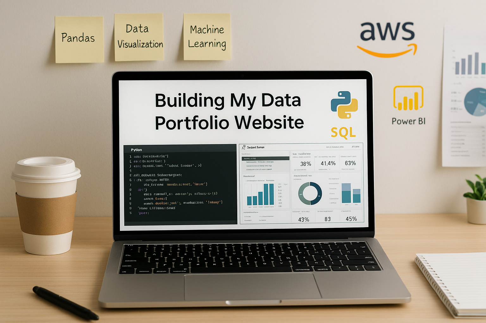

From Resume to Portfolio - My Journey Building a Portfolio Website

Coming back to work after a three-year career break wasn’t as simple as updating my old resume. I was moving into Data Analytics, and it quickly became clear that a list of skills on paper wouldn’t be enough. Employers in this field want to see proof—real projects, dashboards, and examples that demonstrate practical experience.
Why I Needed a Portfolio?
As I researched job opportunities, I noticed a common trend: candidates who showcased their work had a stronger advantage. A portfolio doesn’t just say what tools you know; it shows how you apply them. That realization pushed me to create a space where I could highlight my projects, share my progress, and present my skills in action.
How I Got Started
I already had some knowledge of HTML, so instead of using a drag-and-drop website builder, I decided to build the site myself. I chose a clean template, customized it to fit my needs, and in the process, refreshed my coding skills. It felt good to have full control over the design rather than relying on pre-built layouts.

Building & Hosting the Site
To make the website accessible online, I used GitHub Pages—a free hosting option that works perfectly for personal projects. It integrates well with version control, which meant I could manage updates through Git.
Seeing the site go live for the first time was a small but motivating win.
Adding Projects & Future Plans
Once the basic structure was ready, I began adding my data analytics projects—dashboards, visualizations, and reports that reflect my skills. This is just the beginning; I plan to keep updating the site as I learn more.
This blog section itself will serve as a way to document my journey—sharing what I’m learning, the challenges I face, and the milestones I hit along the way.
What’s Next?
Building this portfolio website has been more than a technical task; it’s been a step towards rebuilding my career with intention.
It’s a space that grows as I do, and I’m excited to see how it evolves as I continue to develop my skills in data analytics.